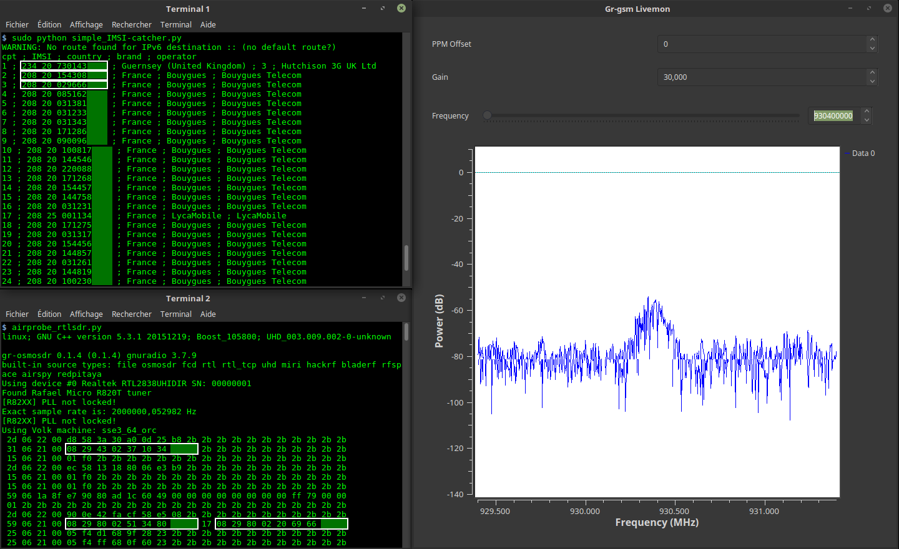

Capture réelle
Vue d'ensemble
Capture d'écran authentique fournie avec le projet : à gauche la sortie de
simple_IMSI-catcher.py et les trames GSM décodées, à droite l'interface
grgsm_livemon avec son spectre de puissance.